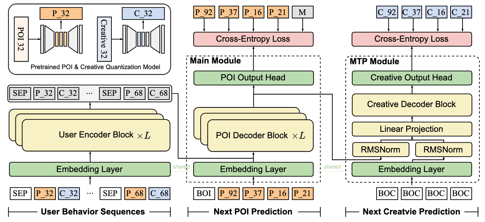
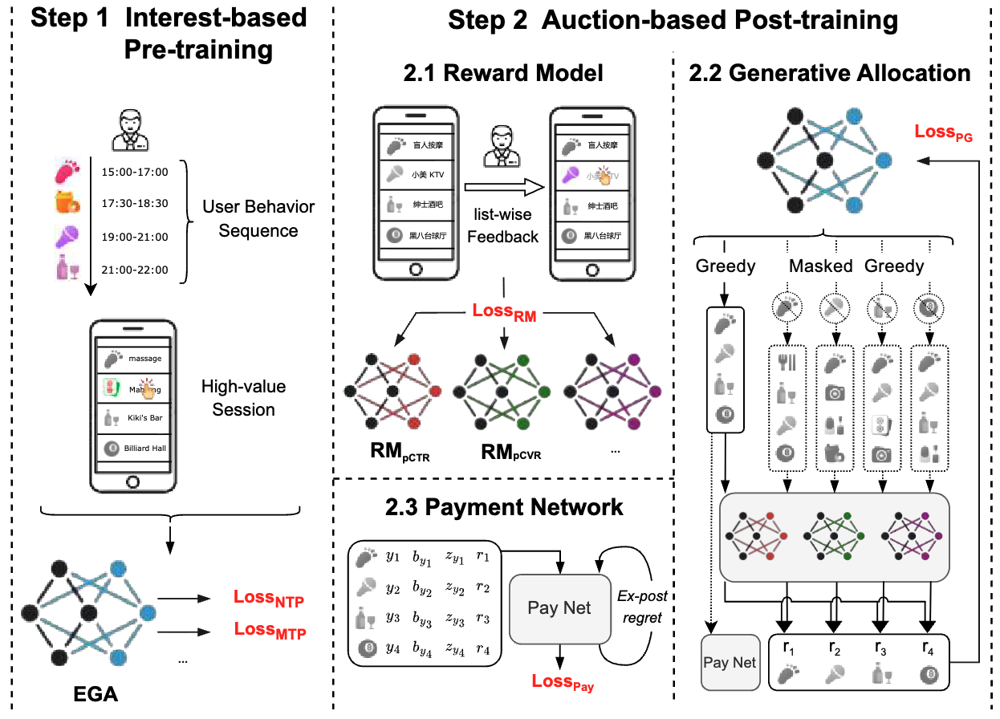
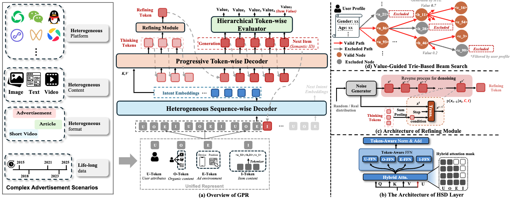

7.3. 竞价机制与多场景广告¶
在推荐和搜索场景中，OneRec 和 OneSearch 通过端到端生成架构成功解决了级联系统的性能瓶颈。然而，在线广告场景面临着更为复杂的约束：系统不仅需要优化用户体验，还必须平衡平台收益与广告主利益，同时满足竞价机制的经济学约束。传统广告系统采用“召回→排序→创意选择→竞价→位置分配”的多阶段架构，每个环节都有独立的优化目标和复杂的业务规则，这种碎片化设计导致全局次优，且难以适应快速变化的市场需求。
端到端生成式广告系统需要解决三个核心挑战：如何将竞价机制深度融入生成过程、如何保证广告主的激励相容性（Incentive Compatibility）、如何在超长异构序列中高效建模用户意图。本节将介绍两个代表性的工业解决方案：EGA（End-to-end Generative Advertising）将竞价机制与生成模型统一，通过 Token 级竞价和 POI 级支付的双层设计实现了激励相容性约束；GPR（Generative Pre-trained Recommender）则通过异构层次化解码器和预训练范式，在微信生态的多场景超长序列中实现了统一的广告生成能力。
7.3.1. EGA：统一竞价与生成¶
7.3.1.1. 广告生成的约束条件¶
在介绍 EGA 的技术细节前，我们先通过一个具体场景理解广告与推荐、搜索的本质差异。
假设用户在本地生活平台刷 feed 流时，系统需要在第 3 个位置插入一条广告。候选广告包括附近的餐厅、健身房、美容院等商户，每个商户提交了不同的竞价（bid），且每个商户有多张创意图片可选（美食照片、环境照片、优惠券等）。系统需要在一次前向传播中完成以下决策。
展示哪个商户（POI）：从数百个候选中选择与用户兴趣和竞价综合最优的商户
使用哪张创意图：为选中的商户匹配最能吸引该用户的创意素材
如何计算支付：根据竞价和分配结果确定商户需要支付的金额
如何保证公平：确保商户如实出价是最优策略（激励相容性）
这个场景揭示了广告生成的三重约束，它们将 EGA 与 OneRec/OneSearch 区分开来，具体如下。
约束一：激励相容性（IC）与个体理性（IR）
在推荐和搜索场景中，系统只需优化用户满意度和平台指标。但在广告场景下，广告主是独立的博弈方，他们会根据系统规则调整竞价策略。如果系统设计不当，广告主可能通过虚报竞价获取更高收益，导致平台收入下降或广告主流失。
激励相容性（IC）要求：广告主如实出价是最优策略。数学上，对于广告主 \(i\) 的真实估值 \(v_i\) 和申报竞价 \(b_i\)，当 \(b_i = v_i\) 时，其效用最大：
其中效用定义为 \(u_i = (v_i - p_i) \cdot \text{pCTR}_i\)，即“点击收益减去支付成本”。个体理性（IR）则要求支付不能超过竞价：\(p_i \leq b_i\)。
传统的 GSP（Generalized Second Price）拍卖通过“按下一位竞价者的价格支付”来保证 IC，但这种规则假设广告之间相互独立，无法处理位置外部性（后续详述）。EGA 的目标是在生成式框架中学习到满足 IC 约束的支付函数。
约束二：POI 与创意的联合生成
在搜索场景中，OneSearch 生成的是商品序列，每个商品有固定的标题和图片。但在广告场景下，一个 POI（如某餐厅）可以关联多张创意图片，且不同用户偏好不同的创意风格，以下是典型的用户偏好场景。
对美食爱好者：展示精致菜品的特写照片
对价格敏感用户：展示“满 100 减 50”的优惠券
对家庭用户：展示宽敞的就餐环境
这要求系统不仅要决定“展示哪个 POI”，还要决定“用哪张创意”。两者需要联合优化：POI 决定内容主体（与用户兴趣和竞价相关），创意优化呈现方式（与用户偏好和上下文相关）。
约束三：分配与支付的解耦设计
如果直接将竞价作为生成概率的权重，会导致“赢家诅咒”：高竞价广告获得曝光后，按自己的竞价支付，导致广告主倾向于压低出价。传统拍卖通过“按次高价支付”解决这一问题，但在生成式框架中，分配是通过 Softmax 概率实现的，没有明确的“第二名”。
EGA 通过分离分配和支付两个模块解决这一矛盾：分配阶段使用竞价引导生成概率，支付阶段通过独立的神经网络学习满足 IC 约束的支付函数。
7.3.1.2. 兴趣建模与预训练¶
EGA 采用“预训练 + 竞价微调”的两阶段训练范式。在预训练阶段，模型忽略竞价信息，专注于从用户历史行为中学习兴趣偏好，构建基础的生成能力。这一阶段的目标是让模型回答：“给定用户的历史行为，他接下来可能对哪些 POI 和创意感兴趣？”
双模态语义 ID：离散化 POI 与创意
与 OneRec 和 OneSearch 类似，EGA 使用 RQ-VAE（Residual Quantized Variational AutoEncoder）将连续的 POI 和创意表示离散化为多层语义 ID。但与它们不同的是，EGA 需要为 POI 和创意构建两套独立的语义空间。
对于 POI（Point of Interest，如餐厅、健身房），其原始表示 \(\boldsymbol{e}_i^{\text{poi}}\) 包含：
类目信息（餐饮、娱乐、生活服务）
地理位置（经纬度、商圈）
统计特征（历史 CTR、平均客单价、评分）
文本描述（商户名称、主营业务）
对于创意图片，其表示 \(\boldsymbol{e}_i^{\text{img}}\) 通过预训练的视觉模型提取：
视觉特征（物体、场景、颜色风格）
文本信息（OCR 提取的促销文案）
创意类型（美食图、环境图、优惠券、品牌 logo）
RQ-VAE 将这些连续表示编码为分层离散码。假设使用 \(C=3\) 层残差量化，每层码本大小为 \(W=1024\)，则每个 POI 被编码为 3 个 token 的序列：
创意同理得到 \(\boldsymbol{a}_i^{\text{img}}\)。用户历史序列中的每个交互可以表示为一个 (POI, 创意) 对：
概率分解的生成策略：先 POI 后创意
一个直观的想法是将 POI 和创意的 6 个 token（3+3）拼接成一个序列，让模型自回归生成。但 EGA 发现这种方式会导致生成的 POI 和创意不匹配，模型可能生成“餐厅 A 的 POI + 健身房 B 的创意”这种无效组合。
EGA 采用概率分解策略，将生成过程拆分为两个阶段：
这种分解的直觉是：POI 决定“展示什么内容”，创意决定“如何呈现内容”。模型先根据用户兴趣生成 POI，再根据 POI 的特性和用户偏好选择匹配的创意。例如：
用户喜欢川菜 → 生成川菜餐厅 POI → 为该餐厅选择“麻辣火锅”创意而非“优雅环境”创意
用户是健身爱好者 → 生成健身房 POI → 选择“专业器械”创意而非“团课氛围”创意
Encoder-Decoder 架构：双解码器实现联合生成
EGA 采用经典的 Encoder-Decoder 架构，但使用两个解码器分别生成 POI 和创意。
{kind=link}

图7.3.1 EGA预训练架构¶
编码器处理用户的历史行为序列。与 OneRec 不同，EGA 的输入序列包含广告和有机内容的混合：
其中 \(\text{type}_i \in \{\text{ad}, \text{organic}\}\) 标识该项是广告还是有机内容。编码器通过多层 Transformer 生成上下文表示：
POI 解码器先生成目标 POI 的语义 ID。在训练时，假设目标 POI 为 \(\boldsymbol{a}_{\text{target}}^{\text{poi}} = (a^1, a^2, a^3)\)，解码器自回归生成每一层的 token：
创意解码器以生成的 POI 为条件，生成对应的创意 ID。关键设计是：创意解码器的输入包含 POI 的 token 序列，这使得模型能够根据 POI 的语义信息选择匹配的创意：
MTP（Multi-Token Prediction）模块的作用
在标准的 Transformer 解码器中，每个时间步只预测下一个 token。但 EGA 发现，POI 的生成和创意的生成存在内在关联，可以通过联合训练提升性能。
MTP 模块在每个解码步同时监督两个解码器：
其中：
这里 \(K\) 是目标序列长度（通常为 10），\(\mathcal{Y}_{1:i-1}\) 是已生成的 (POI, 创意) 对。MTP 的效果是让两个解码器共享底层表示，加速收敛并提升一致性。
7.3.1.3. 排列感知奖励模型¶
预训练模型学会了根据用户兴趣生成 POI 和创意，但它对“哪个广告更好”没有明确的判断标准。在竞价驱动的微调阶段，系统需要一个奖励模型来评估生成序列的业务价值。但与 OneRec 的 P-Score 奖励模型不同，广告场景的奖励模型必须处理位置外部性（Position Externality）问题。
位置外部性：广告不是独立的
在传统推荐系统中，通常假设每个物品的 CTR 是独立的：\(\text{pCTR}_i = f(\text{user}, \text{item}_i)\)。但在广告场景下，这个假设不成立：
位置效应：同一个广告在位置 1 的 CTR 远高于位置 5，因为用户注意力随滚动衰减
相邻效应：如果位置 3 和位置 4 都是餐饮广告，用户可能只点击一个，导致两者相互抑制
对比效应：高质量广告后紧跟低质量广告，会导致后者 CTR 下降（对比鲜明）
数学上，位置外部性意味着广告 \(i\) 的 CTR 取决于整个序列 \(\mathcal{Y}\)：
其中 \(\mathcal{Y}_{-i}\) 是序列中除 \(i\) 外的其他广告，\(\text{pos}_i\) 是广告 \(i\) 的位置。传统的点预估模型（如 DeepFM、Wide&Deep）无法建模这种序列级依赖，因为它们是 point-wise 的。
Self-Attention 建模序列依赖
EGA 的奖励模型采用 permutation-aware（排列感知）设计，通过 Self-Attention 让每个广告“看到”序列中的其他广告。
输入构造是关键。对于生成的序列 \(\mathcal{Y} = \{(\boldsymbol{a}_1^{\text{poi}}, \boldsymbol{a}_1^{\text{img}}), \ldots, (\boldsymbol{a}_K^{\text{poi}}, \boldsymbol{a}_K^{\text{img}})\}\)，奖励模型需要同时利用以下信息。 - Token 表示：\(\boldsymbol{a}_i\) 通过 Embedding 层映射为向量 - 原始特征：\(\boldsymbol{e}_i^{\text{poi}}\) 包含 POI 的连续特征（位置、类目、统计信息）
两者拼接后输入 Self-Attention 层：
Self-Attention 的效果是：每个广告 \(i\) 的表示 \(\boldsymbol{h}_f^{(i)}\) 融合了序列中其他广告的信息。例如，如果位置 3 和位置 4 都是餐饮广告，Self-Attention 会让两者的表示相互抑制（Attention 权重分散），从而降低各自的 pCTR 预估。
多任务塔设计：三个独立的预估目标
奖励模型需要预测多个业务指标。EGA 采用多塔架构，三个塔分别专注于不同目标。
POI-CTR 塔：预测用户点击该 POI 的概率
Creative-CTR 塔：预测用户点击该创意的概率（与 POI 解耦）
CVR 塔：预测点击后的转化概率（下单、到店等）
每个塔从 \(\boldsymbol{h}_f\) 出发，通过独立的 MLP 输出概率：
多塔设计的好处是：可以为不同目标分配不同的权重。例如，平台可以调整 \(\lambda_{\text{ctr}}\) 和 \(\lambda_{\text{cvr}}\) 来平衡短期点击和长期转化。
最终的奖励分数由这些预估值加权得到（具体权重在 Policy Gradient 阶段使用）：
7.3.1.4. 竞价驱动生成与支付分离¶
预训练和奖励模型解决了“如何生成”和“如何评估”的问题，但核心挑战尚未触及：如何将广告主的竞价整合到生成过程中，同时保证激励相容性？这是 EGA 的核心创新所在。
挑战：量化后的竞价对齐
在传统的广告排序系统中，每个广告 \(i\) 有一个明确的竞价 \(b_i\)，系统可以直接用 \(b_i \times \text{pCTR}_i\) 作为排序分数。但在生成式框架中，模型输出的是 token 序列，而 token 与广告之间是多对多关系：
一个广告通过 RQ-VAE 编码为多个 token（POI 3 个 + 创意 3 个）
一个 token（如“餐饮”类目的某个码字）可能对应多个广告
这导致传统的 item-level bid 无法直接使用。EGA 提出了两层设计：Token 级别的竞价聚合用于引导生成，POI 级别的支付网络用于保证 IC。
Token 级别竞价机制：最大值聚合策略
对于 RQ-VAE 的第 \(j\) 层，假设 token \(a_i^j\) 对应的广告集合为 \(\{x_1, x_2, \ldots, x_{N_i}\}\)（即这些广告的第 \(j\) 层 token 都是 \(a_i^j\)），EGA 使用最大值聚合计算该 token 的竞价权重：
为什么用 max 而非 avg？直觉上，如果一个 token 对应了某个高竞价广告，那么生成这个 token 有很高的商业价值，应该提升其生成概率。如果用平均值，高竞价广告的信号会被低竞价广告稀释。
基于 token 竞价，EGA 定义分配概率。标准的 Softmax 生成概率为：
EGA 引入竞价权重调整这一概率：
其中权重函数为：
超参数 \(\alpha\) 和 \(\beta\) 有明确的业务含义：
\(\alpha\)：控制竞价的影响权重。\(\alpha=0\) 时退化为纯兴趣推荐，\(\alpha \to \infty\) 时变成纯竞价排序
\(\beta\)：控制广告与有机内容的比例。\(\beta\) 越大，有机内容（竞价为 0）的生成概率越高
通过调整 \(\alpha\) 和 \(\beta\)，平台可以在用户体验和商业收益之间灵活权衡。
POI 级别支付网络：学习满足 IC 的支付函数
如果直接按生成概率 \(z(a_i^j)\) 计算支付，会出现问题：生成概率不是 differentiable 的竞价函数（因为涉及 argmax 和离散采样），难以进行端到端优化。更重要的是，简单的“按概率支付”无法保证激励相容性。
EGA 的解决方案是将分配和支付解耦：分配阶段使用竞价引导生成（如上所述），支付阶段通过独立的神经网络学习满足 IC 约束的支付函数。
支付网络的输入包含以下三部分。
POI 序列表示 \(\mathcal{S}^* = \{y_1, y_2, \ldots, y_K\} \in \mathbb{R}^{K \times d}\)：生成的 POI 序列的连续表示
自排除竞价矩阵 \(\mathcal{B}^- = \{\boldsymbol{b}_{-1}, \boldsymbol{b}_{-2}, \ldots, \boldsymbol{b}_{-K}\} \in \mathbb{R}^{K \times (K-1)}\)：对于 POI \(i\)，\(\boldsymbol{b}_{-i}\) 是其他所有 POI 的竞价向量。这是 IC 约束的关键输入：根据机制设计理论，一个机制满足 IC 当且仅当广告主 \(i\) 的支付仅依赖于其他人的竞价和自己的分配结果
期望价值 \(\mathcal{Z} \cdot \Theta \in \mathbb{R}^{K \times 1}\)：\(\mathcal{Z} = \{z_1, z_2, \ldots, z_K\}\) 是各 POI 的分配概率（从 token 概率聚合得到），\(\Theta = \{\hat{r}_1^{\text{pctr}}, \hat{r}_2^{\text{pctr}}, \ldots, \hat{r}_K^{\text{pctr}}\}\) 是排列感知的 pCTR
支付网络通过 MLP 输出支付率（0 到 1 之间）：
最终支付为支付率乘以竞价：
Sigmoid 激活函数保证了 \(\hat{p}_i \in [0, 1]\)，从而满足个体理性约束 \(p_i \leq b_i\)。
Ex-post Regret 约束：近似保证激励相容性
支付网络如何学习到满足 IC 的支付函数？EGA 借鉴机制设计中的 ex-post regret 概念来量化 IC 违反程度。
对于广告主 \(i\)，假设其真实估值为 \(v_i\)，如实申报为 \(b_i = v_i\)，其效用为：
如果广告主谎报为 \(b'_i\)，效用变为 \(u_i(v_i; b'_i, \boldsymbol{b}_{-i})\)。Ex-post regret 定义为“谎报的最大收益”：
如果 \(\text{rgt}_i = 0\)，则该广告主如实出价是最优的。在实践中，EGA 通过采样多个候选竞价 \(\{b'_1, b'_2, \ldots, b'_{N_v}\}\) 近似计算 regret：
Lagrangian 优化：平衡收益与 IC
支付网络的训练目标是最大化平台收益，同时将 ex-post regret 约束到接近 0。这是一个约束优化问题：
其中平台收益为：
EGA 使用 Lagrangian 对偶方法求解。引入 Lagrange 乘子 \(\lambda_i\) 和惩罚项系数 \(\rho\)，损失函数变为：
训练过程交替更新，步骤如下。
固定 \(\lambda\) ，优化支付网络参数 \(\boldsymbol{\theta}_{\text{Pay}}\) ：最小化 \(\mathcal{L}_{\text{Pay}}\)
固定 \(\boldsymbol{\theta}_{\text{Pay}}\) ，更新 Lagrange 乘子：\(\lambda_i^{\text{new}} = \lambda_i^{\text{old}} + \rho \cdot \widehat{\text{rgt}}_i\)
直觉上，如果广告主 \(i\) 的 regret 较高（容易通过谎报获益），Lagrange 乘子 \(\lambda_i\) 会增大，迫使损失函数更加关注降低该广告主的 regret。
7.3.1.5. 两阶段联合训练¶
EGA 的完整训练流程分为两个阶段：Interest-based Pre-training 学习用户兴趣表示，Auction-based Post-training 整合竞价机制并优化业务目标。
{kind=link}

图7.3.2 EGA训练流程¶
阶段一：Interest-based Pre-training
这一阶段忽略竞价信息，用真实的曝光序列训练生成模型。数据来源是线上系统的日志：用户 \(u\) 在某次会话中浏览的 POI-创意序列（包括广告和有机内容）。
训练目标是 Next Token Prediction（NTP）和 Multi-Token Prediction（MTP）的联合损失：
具体而言：
这一阶段训练的模型记为 \(\mathcal{F}\)，它具备基础的生成能力，但尚未对齐业务目标。
阶段二：Auction-based Post-training
这一阶段引入竞价、奖励模型和支付网络，通过以下三个子任务联合优化。
子任务 1：奖励模型训练
奖励模型 \(\mathcal{R}\) 使用用户的真实反馈（点击、转化）作为监督信号。对于生成的序列 \(\mathcal{Y}\)，每个 POI 的真实标签为 \(y_i^{\text{pctr-poi}}, y_i^{\text{pctr-img}}, y_i^{\text{pcvr}} \in \{0, 1\}\)。
训练目标是多任务二元交叉熵：
奖励模型训练完成后，参数冻结，作为后续 Policy Gradient 的评估器。
子任务 2：Policy Gradient 优化生成策略
生成模型需要学习：高奖励的序列应该有更高的生成概率。EGA 采用 non-autoregressive Policy Gradient 方法。
对于生成的序列 \(\mathcal{S}^* = \{y_1, y_2, \ldots, y_K\}\)，定义每个 POI \(y_i\) 的边际贡献奖励为：
其中 \(\mathcal{S}^*_{-i}\) 是移除 \(y_i\) 后重新生成的最优序列（通过 Beam Search 获得）。这个奖励衡量“如果不生成 \(y_i\)，平台收益会下降多少”。
Policy Gradient 损失为：
其中 \(z_{y_i}\) 是 POI \(y_i\) 的分配概率（从 token 概率聚合得到）。梯度反向传播时，会更新生成模型的参数，使得高奖励的 POI 获得更高的生成概率。
子任务 3：支付网络优化
支付网络通过 Lagrangian 方法最小化 ex-post regret，如前所述：
这三个子任务在 Post-training 阶段交替迭代：先训练奖励模型收敛，再联合优化 Policy Gradient 和支付网络。
与 OneRec 奖励系统的对比
OneRec 的奖励系统通过 P-Score 模型预测用户偏好，然后用 ECPO 算法进行策略优化。EGA 的核心差异如下。
引入竞价信号：奖励不仅包含用户反馈（pCTR、pCVR），还包含广告主的竞价 \(b_i\)，平台收益 \(\text{Rev} = \sum b_i \times \text{pCTR}_i\) 成为优化目标
IC 约束：需要额外保证广告主如实出价是最优策略，这通过支付网络和 ex-post regret 约束实现
排列感知：奖励模型必须处理位置外部性，而 OneRec 的 P-Score 是 point-wise 的
与传统 GSP 的对比
传统的 GSP（Generalized Second Price）拍卖通过固定规则计算支付：广告主 \(i\) 的支付为 \(p_i = b_{i+1} \times \text{pCTR}_{i+1} / \text{pCTR}_i\)（按下一位的“质量调整竞价”支付）。这保证了 IC，但有两个局限：
假设独立性：GSP 假设广告的 pCTR 是独立的，无法处理位置外部性
固定规则：支付公式是预先设定的，无法根据平台目标灵活调整
EGA 的支付网络通过学习支付函数，能够适应更复杂的场景，并通过 Lagrangian 优化在收益和 IC 之间动态平衡。
7.3.1.6. EGA 的局限与新挑战¶
EGA 成功地将竞价机制整合到端到端生成框架中，在本地生活广告场景取得了显著效果。但在更复杂的应用场景中，EGA 面临以下三个核心挑战。
挑战一：跨场景异构性
现代广告平台通常包含多个场景：信息流、短视频、搜索、电商详情页等。每个场景的用户行为模式和内容形态差异巨大，具体体现如下。
信息流：用户被动浏览，广告需要强视觉冲击力
搜索：用户主动查询，广告需要高相关性
短视频：用户沉浸观看，广告需要融入内容风格
EGA 的 RQ-VAE 量化器和 Encoder-Decoder 架构是针对单一场景设计的，难以统一建模跨场景的用户旅程。如果为每个场景训练独立的 EGA 模型，又会导致模型碎片化和数据孤岛问题。
挑战二：超长序列处理
活跃用户在广告平台的行为序列可能跨越数月，累积数万甚至数十万条交互记录。EGA 的 Encoder 基于标准 Transformer，输入长度受限于显存和计算复杂度（Self-Attention 是 \(O(L^2)\)）。虽然可以通过采样或截断处理超长序列，但会损失大量历史信息。
更关键的是，超长序列中包含大量噪声和无关行为（如误触、探索式点击），直接输入模型会干扰兴趣建模。需要更强的序列压缩和过滤机制。
挑战三：推理效率瓶颈
EGA 在推理时使用 Beam Search 生成多个候选序列，然后通过奖励模型筛选最优序列。但 Beam Search 会生成大量以下类型的无效候选。
预算耗尽：某些广告的当日预算已用完，但模型仍可能生成
定向不匹配：广告定向要求“20-30 岁女性”，但用户是 40 岁男性
地域限制：广告仅在北京投放，但用户在上海
这些无效候选需要在后处理阶段过滤，增加了延迟。理想情况下，模型应该在生成过程中就避免这些无效候选。
过渡到 GPR
这些挑战在腾讯的微信生态中尤为突出：微信广告覆盖视频号、朋友圈、公众号、小程序等多个场景，用户行为序列动辄数万条，且实时性要求极高（推理延迟需控制在 100ms 内）。为了应对这些挑战，腾讯团队提出了 GPR（Generative Pre-trained Recommender），通过三个核心创新突破 EGA 的局限：统一输入表示处理异构场景、层次化解码器高效建模超长序列、价值引导的 Trie 约束 Beam Search 提升推理效率。
7.3.2. GPR：预训练驱动的广告生成¶
GPR 的设计哲学与 EGA 有显著差异：EGA 将竞价机制深度嵌入生成过程，强调“竞价驱动”；GPR 则采用“预训练 + 微调”的范式，先在海量无监督数据上学习通用的用户兴趣表示，再通过价值感知的微调和强化学习对齐业务目标。这种范式在处理多场景、超长序列时展现出更强的泛化能力和效率优势。
7.3.2.1. 统一输入表示设计¶
多场景融合的挑战
微信生态的广告场景主要包含以下几个。
视频号：用户刷短视频，广告形式为视频或图文卡片
朋友圈：用户浏览好友动态，广告穿插其中，强调原生性
公众号：用户阅读文章，广告位于文章底部或中部
小程序：用户使用小程序时，广告以 Banner 或插屏形式展示
每个场景的内容形态、用户意图、交互模式都不同。传统做法是为每个场景训练独立的模型，但这会导致以下问题。
数据孤岛：无法利用跨场景的用户行为协同信号（如用户在公众号阅读美食文章后，在视频号观看烹饪视频）
模型碎片化：维护多个模型的训练和部署成本高
冷启动问题：新场景缺乏训练数据，模型效果差
GPR 的目标是构建统一的输入表示框架，让一个模型能够同时处理多个场景的广告生成任务。
四类 Token 设计：异构序列的统一语言
GPR 将用户的完整行为旅程编码为以下四类 Token 的混合序列。
U-Token（User Token）：编码用户的静态属性和长期偏好
人口统计学特征：年龄、性别、地域、职业
消费能力：历史消费金额、活跃度等级
兴趣标签：从历史行为中挖掘的兴趣类目（美食、运动、科技等）
O-Token（Organic Token）：编码用户浏览的有机内容（非广告）
短视频：通过 RQ-VAE 量化的视频语义 ID
文章：通过预训练语言模型提取的文本表示
好友动态：朋友圈内容的多模态表示
E-Token（Environment Token）：编码请求的即时环境
时间特征：小时、星期、节假日
地理位置：当前城市、商圈
设备信息：机型、网络状态（WiFi/4G）
场景标识：当前是在视频号、朋友圈还是公众号
I-Token（Item Token）：编码用户交互过的广告 item
通过 RQ-VAE 量化的广告语义 ID
包含 POI 和创意两部分（与 EGA 类似）
一个完整的用户序列示例（简化版）：
[U-Token: 25岁, 女性, 北京, 美食爱好者]
[E-Token: 晚上8点, 周五, 朝阳区, 视频号]
[O-Token: 短视频-火锅教学]
[I-Token: 广告-川菜餐厅]
[O-Token: 短视频-旅游vlog]
[E-Token: 晚上9点, 周五, 朝阳区, 朋友圈]
[O-Token: 好友动态-健身打卡]
[I-Token: 广告-健身房]
...
这种表示具有以下优势。
场景统一：不同场景的内容都用同一套 Token 体系表示
时序连贯：跨场景的用户行为形成完整的时间线
上下文丰富：每个广告 I-Token 周围有丰富的 O-Token 和 E-Token 提供上下文
RQ-Kmeans+ 量化器改进：解决 Codebook Collapse
O-Token 和 I-Token 需要通过量化器将连续的多模态表示转换为离散的语义 ID。传统的 RQ-VAE 在处理广告数据时面临codebook collapse问题：随机初始化的码本中，某些码字从未被激活，导致码本利用率低（可能只有 60-70%）。
GPR 提出 RQ-Kmeans+，结合 RQ-Kmeans 的高质量初始化和 RQ-VAE 的端到端优化，步骤如下。
步骤 1：RQ-Kmeans 初始化
首先收集大量广告和有机内容的表示 \(\{\boldsymbol{e}_1, \boldsymbol{e}_2, \ldots, \boldsymbol{e}_N\}\)，通过残差 K-means 构建初始码本 \(\mathcal{V} = \{\mathcal{V}^1, \mathcal{V}^2, \ldots, \mathcal{V}^C\}\)（\(C\) 层，每层 \(W\) 个码字）。
对于第 \(l\) 层，在残差 \(\mathcal{R}^{(l)}\) 上运行 K-means：
这种初始化保证每个码字至少被分配到一些样本，避免“死码字”。
步骤 2：残差连接 + 端到端微调
使用 RQ-Kmeans 的码本作为 RQ-VAE 的初始权重，但在编码器侧加入残差连接：
其中 \(\alpha \in [0, 1]\) 是可学习的权重。残差连接确保在训练早期，输出分布接近输入分布，加速收敛并稳定潜在空间的对齐。
然后用标准的 RQ-VAE 损失进行端到端训练：
其中 sg 表示 stop-gradient 算子。
效果：RQ-Kmeans+ 将码本利用率从 EGA 的 65% 提升至 92%，同时重构误差下降 15%，说明表示能力显著增强。
7.3.2.2. 异构层次化解码器¶
EGA 的 Encoder-Decoder 架构将编码器和解码器紧密耦合，解码器在生成每个 token 时都需要通过 Cross-Attention 访问完整的编码器输出。当输入序列长度达到数万时，这种设计会导致显存和计算瓶颈。
GPR 提出 Heterogeneous Hierarchical Decoder (HHD)，通过三层解耦的解码器实现“先理解、再推理、后生成”的流程。这种设计受到人类决策过程的启发：我们在做决策时，通常先整体理解情况（形成意图），然后深入思考关键因素（推理），最后做出具体行动（生成）。
{kind=link}

图7.3.3 GPR架构图¶
第一层：HSD（Heterogeneous Sequence-wise Decoder）—— 意图理解层
HSD 的任务是从异构的输入序列中提炼出用户的意图表示（Intent Embeddings）。这一层采用改进的 HSTU（Heterogeneous Sequential Transduction Unit）架构，包含以下三个关键设计。
设计 1：Hybrid Attention Mask——区分 Prompt 和 Target
在 GPR 的输入序列中，U-Token、O-Token、E-Token 构成“Prompt”（条件信息），I-Token 构成“Target”（生成目标）。标准的因果注意力（causal mask）对所有 token 一视同仁，但这对 Prompt 区域过于严格，用户属性、有机内容、环境信息之间应该充分交互，而不是单向依赖。
GPR 设计了 Hybrid Attention Mask：
具体效果如下。
Prompt 区域内部（U/O/E-Token）：双向注意力，\(M_{ij} = 0\)，任意两个 token 可以相互看到
Target 区域（I-Token）：因果注意力，\(M_{ij} = -\infty\) if \(j > i\)，保证自回归生成
Target 看 Prompt：\(M_{ij} = 0\) if \(i \in \text{I-Token}, j \in \text{U/O/E-Token}\)，生成时可以访问完整上下文
举例说明：假设序列为 [U, E, O, O, I1, I2]，Attention 矩阵为：
U E O O I1 I2
U [ 0 0 0 0 X X ]
E [ 0 0 0 0 X X ]
O [ 0 0 0 0 X X ]
O [ 0 0 0 0 X X ]
I1 [ 0 0 0 0 0 X ]
I2 [ 0 0 0 0 0 0 ]
其中 0 表示可见，X 表示不可见（-∞）。
设计 2：Token-Aware Normalization——异构 Token 的独立归一化
U-Token、O-Token、E-Token、I-Token 的分布特性差异巨大：
U-Token 是离散特征（年龄、性别），值域有限
O-Token 是多模态内容表示，分布连续且方差大
E-Token 是时间和地理特征，周期性强
I-Token 是广告表示，与竞价相关
如果对所有 token 使用统一的 LayerNorm，会导致归一化参数无法适应异构分布。GPR 为每种 token 分配独立的归一化层和前馈网络（FFN）：
这将每种 token 投影到各自的语义子空间，充分捕获语义多样性。
设计 3：MoR（Mixture-of-Recursions）——增加推理深度
为了增强模型的推理能力，GPR 引入 Mixture-of-Recursions 机制：在不增加参数的情况下，让某些层递归调用自身多次。
具体而言，对于第 \(l\) 层，输出为：
其中 \(r\) 是递归次数，\(w_r\) 是可学习的权重。每次递归调用同一层的参数，但输入是上一次递归的输出。这类似于“多轮思考”，模型对同一信息反复处理，逐步提炼关键信号。
可选增强：LLM 思维链注入
对于高价值用户，GPR 可以利用外部 LLM（如 GPT-4）生成用户意图的文本描述：
输入：用户最近浏览了火锅教学视频、川菜餐厅广告、旅游vlog
LLM 输出：该用户对美食和旅行感兴趣，特别偏好川菜风味，可能在计划近期的旅行或聚餐
这段文本被 Tokenize 后，作为额外的 O-Token 注入序列，丰富意图表示。
HSD 的输出是意图嵌入（Intent Embeddings） \(\mathcal{S}^e \in \mathbb{R}^{L \times d}\)，它包含了用户历史行为的高层抽象表示。
第二层：PTD（Progressive Token-wise Decoder）—— 推理与生成层
意图嵌入包含了丰富的信息，但也包含大量冗余。PTD 的任务是从意图中提取与当前广告生成任务相关的关键信号，并逐步生成广告的语义 ID。GPR 设计了“Thinking-Refining-Generation”三段式生成范式。
阶段 1：Thinking 阶段——提取关键信号
PTD 首先生成 \(K\) 个 Thinking Tokens（通常 \(K=4\)），这些 token 不对应具体的广告内容，而是用于“思考”，从意图嵌入中筛选关键信息。
Thinking Tokens 通过可学习的查询向量初始化：
然后通过 Cross-Attention 从意图嵌入中提取信息：
Cross-Attention 的效果是：Thinking Tokens 学会关注意图嵌入中与广告生成相关的部分，过滤掉无关信息。例如，如果当前要生成餐饮广告，Thinking Tokens 会关注用户历史中的美食相关行为，而忽略健身、科技等无关行为。
阶段 2：Refining 阶段——基于扩散的迭代优化
Thinking Tokens 提取的信息可能仍然不够精确。GPR 借鉴大语言模型中的 Self-Reflection 机制，引入基于扩散模型的 Refining 模块对推理结果进行迭代优化。
Refining 模块的设计受到 Stable Diffusion 的启发，包含以下两个步骤。
加噪过程：对 Thinking Tokens 添加高斯噪声
(7.3.43)¶\[\boldsymbol{h}_{\text{noisy}} = \boldsymbol{h}_{\text{think}} + \epsilon, \quad \epsilon \sim \mathcal{N}(0, \sigma^2 I)\]去噪过程：通过条件去噪 Transformer 迭代移除噪声
(7.3.44)¶\[\boldsymbol{h}_{\text{refined}} = \text{DenoisingTransformer}(\boldsymbol{h}_{\text{noisy}}, \boldsymbol{c})\]其中条件 \(\boldsymbol{c}\) 是 Thinking Tokens 的聚合表示：
(7.3.45)¶\[\boldsymbol{c} = \text{SumPooling}(\boldsymbol{h}_{\text{think}})\]
为什么这样设计？加噪-去噪的过程强迫模型“重新组织”推理结果，类似于人类在做决策时的“二次确认”。实验表明，Refining 模块能够提升生成质量 2-3%，尤其对于复杂用户（行为序列长、兴趣多样）的效果提升更明显。
阶段 3：Generation 阶段——自回归生成语义 ID
基于 Thinking Tokens 和 Refining Token，PTD 自回归生成目标广告的语义 ID。假设使用 3 层 RQ 编码，生成过程为：
每一步生成的 token 都作为下一步的输入，形成自回归链。
第三层：HTE（Hierarchical Token-wise Evaluator）—— 价值评估层
与 EGA 的奖励模型类似,HTE 负责预测生成广告的业务价值。但 HTE 的独特之处在于：它在每一层 token 生成时就输出价值估计，而不是等到完整序列生成后才评估。
对于第 \(l\) 层生成的 token \(a^l\)，HTE 输出该 token 对应的期望价值：
最终广告的价值是各层价值的聚合：
其中 pCTR、pCVR 通过类似 EGA 的多任务塔预测，eCPM（effective Cost Per Mille）是广告主的竞价乘以 pCTR。
HTE 在推理时有以下两个用途。
Beam Search 剪枝：低价值的 token 分支提前终止
Policy Optimization 的 Critic：在强化学习阶段，HTE 作为价值函数估计优势（Advantage）
7.3.2.3. 价值引导的 Beam Search¶
EGA 在推理时使用标准 Beam Search，会生成大量无效候选。GPR 提出 Value-Guided Trie-based Beam Search，将价值估计和约束过滤直接集成到解码过程中。
Trie 树约束：预先过滤无效候选
Trie（字典树）是一种前缀树数据结构，常用于字符串匹配。GPR 将其扩展到语义 ID 空间：根据当前用户的画像和广告的投放约束，构建一棵 Trie 树，其中只包含有效的广告 ID 序列。
构建过程
收集约束条件
用户画像：年龄 25 岁、女性、北京、美食爱好者
广告定向：某餐厅广告定向“20-30 岁女性，一线城市”
预算状态：某些广告预算已耗尽
地域限制：某些广告仅在特定城市投放
过滤广告池：从全量广告库中筛选出满足约束的广告子集 \(\mathcal{X}_{\text{valid}}\)
提取语义 ID：将 \(\mathcal{X}_{\text{valid}}\) 中每个广告的 3 层语义 ID 提取出来，例如：
广告 A: [23, 456, 789] 广告 B: [23, 456, 801] 广告 C: [23, 512, 234]
构建 Trie 树：
根节点 ├── 23 (第1层) │ ├── 456 (第2层) │ │ ├── 789 (第3层, 对应广告A) │ │ └── 801 (第3层, 对应广告B) │ └── 512 (第2层) │ └── 234 (第3层, 对应广告C)
解码约束：在生成第 \(l\) 层 token 时，只从 Trie 树当前节点的子节点集合中采样，而不是从整个码本（\(W=1024\) 个候选）中采样。这将搜索空间从 \(W^3\) 缩小到 \(|\mathcal{X}_{\text{valid}}|\)。
价值动态调整束宽：高价值分支探索更深
标准 Beam Search 对所有分支使用固定的束宽 \(B\)。GPR 根据 HTE 输出的价值动态调整每个分支的探索宽度。
对于第 \(l\) 层生成的 token \(a^l\)，其价值为 \(v^l\)（由 HTE 输出）。该分支在下一层的束宽为：
其中：
\(\bar{v}\) 是当前所有分支的平均价值
\(\tau\) 是温度系数，控制束宽差异的程度
\(B_{\text{min}}\) 是最小束宽（保证低价值分支不被完全抛弃）
直觉：如果某个 token 的价值远高于平均值（如对应高竞价的热门品类），该分支会被分配更宽的束宽，探索更多可能性；反之，低价值分支提前收缩，节省计算。
实际效果
推理延迟：从 EGA 的 150ms 降至 80ms（降低 47%）
有效候选占比：从 40% 提升至 95%（大部分无效候选在解码早期被 Trie 树过滤）
Top-1 准确率：提升 3.2%（价值引导使模型更专注于高质量候选）
7.3.2.4. 多阶段训练策略¶
GPR 的训练分为三个阶段，每个阶段有明确的目标和数据来源。
阶段一：MTP 预训练——学习通用兴趣表示
这一阶段的目标是从海量的用户行为序列中学习兴趣表示，不引入任何广告特有的信号（如竞价、转化率）。
数据来源：微信生态的全量用户行为日志，包括以下内容。
视频号：观看、点赞、评论、分享
朋友圈：浏览、点赞、评论
公众号:阅读、分享、关注
广告：点击、转化（但不使用竞价信息）
每条样本是一个用户的行为序列 \(\mathcal{S}^u\)，目标是预测下一个交互的 POI（或内容）。
训练目标：Multi-Token Prediction（MTP）
具体而言：
预训练阶段使用超大规模数据（数十亿用户、数千亿交互），模型参数规模达到数十亿（GPR 的最大版本为 8B 参数）。
阶段二：Value-Aware Fine-tuning——引入业务监督
预训练模型学会了预测“用户接下来可能交互什么”，但这与业务目标（点击率、转化率、平台收益）存在 gap。第二阶段引入 HTE 模块，使用真实的用户反馈进行监督学习。
数据来源：线上广告系统的曝光、点击、转化日志。每条样本包含： - 用户序列 \(\mathcal{S}^u\) - 曝光的广告 \(\{x_1, x_2, \ldots, x_K\}\) - 用户反馈：点击标签 \(y_i^{\text{clk}} \in \{0, 1\}\)、转化标签 \(y_i^{\text{cvr}} \in \{0, 1\}\)
训练目标：多任务监督学习
其中 BCE 是二元交叉熵损失：
这一阶段冻结 HSD 和 PTD 的参数，只训练 HTE 的多任务塔。
阶段三：HEPO（Hierarchy Enhanced Policy Optimization）——层次化策略优化
前两个阶段通过监督学习建立了生成能力和价值预估能力，但模型的优化目标仍然是“拟合历史数据”，而非“最大化业务收益”。第三阶段通过强化学习，让模型学会生成能够最大化平台收益的广告序列。
HEPO 的核心创新：同时在 token 级和 item 级进行策略梯度优化。
传统的 Policy Gradient（如 REINFORCE）仅在序列级别定义奖励：
但这种方法存在高方差问题，尤其当序列长度较大时。HEPO 将奖励分解为以下两个层次。
Token 级奖励：每生成一个 token，HTE 输出该 token 的即时价值 \(v^l\)。Token 级优势为：
其中 \(\bar{v}^l\) 是该层所有候选 token 的平均价值（baseline）。
Item 级奖励：整个广告生成完成后，计算该广告对平台收益的贡献：
其中 \(b_i\) 是广告主竞价，\(\lambda\) 是转化价值权重。Item 级优势通过与其他生成候选对比得到：
层次化优势聚合：将 token 级优势累积为 item 级优势
其中 \(\gamma \in [0, 1]\) 是折扣因子。
HEPO 损失函数：
其中 \(\beta\) 控制 token 级和 item 级优化的权重。
这种层次化设计具有以下好处。
低方差：Token 级优势的方差远小于 Item 级（因为 token 空间小）
精细控制：可以识别“哪一层 token 的生成导致了低价值”，针对性优化
快速收敛：Token 级梯度提供密集信号，加速学习
7.3.2.5. 设计权衡与实际效果¶
GPR 在微信视频号广告系统全量上线，相比传统的多阶段级联系统（召回→排序→创意→竞价→分配），取得了以下显著的业务提升。
GMV（Gross Merchandise Volume）：提升 X%
CTCVR（点击转化率）：提升 Y%
推理延迟：从级联系统的 200ms+ 降至 80ms
模型维护成本：从 5 个独立模型（召回、排序、创意、竞价、分配）简化为 1 个统一模型
但 GPR 的设计也有其权衡，具体如下。
架构复杂度 vs 场景通用性：HHD 的三层解码器和 Thinking-Refining-Generation 范式增加了模型复杂度，训练和推理的代码量是 EGA 的 2 倍以上。但这种复杂度换来了跨场景的通用性：同一个 GPR 模型可以同时服务视频号、朋友圈、公众号，而无需为每个场景训练独立模型。
预训练成本 vs 零样本迁移能力：GPR 的预训练阶段需要消耗数千张 GPU 卡、数周时间，成本远高于 EGA 的监督学习。但预训练模型具备强大的零样本迁移能力：当新场景上线时（如视频号新增的“商品橱窗”广告位），无需重新训练，只需进行少量微调即可达到良好效果。
端到端优化 vs 可解释性：GPR 将广告生成的所有决策融合到一个黑盒模型中，相比级联系统的可解释性较差。当业务指标异常时，难以定位是“意图理解”、“推理”还是“价值评估”环节的问题。实践中，GPR 通过引入中间层监督（如 Thinking Tokens 的可视化、HTE 的分层价值输出）部分缓解了这一问题。